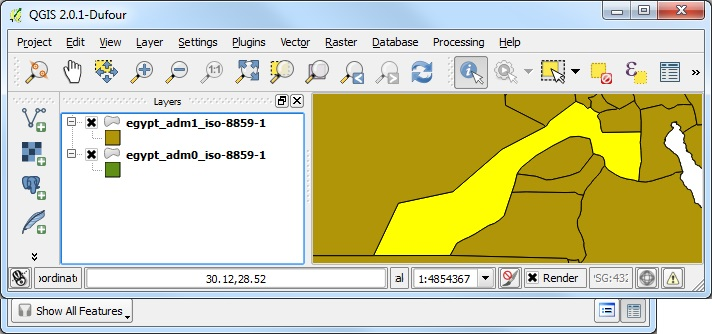
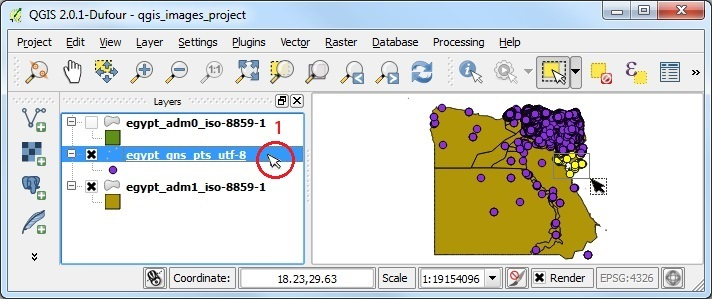
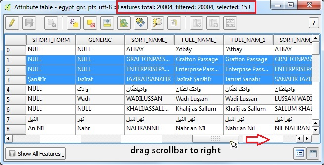

Select Features
This tutorial page refers to data that you can download from the older_data folder, right-click and save the file workshop_data_2014-02.zip to your desktop. Right-click on the .zip file to "Extract all files" (on Windows) to your desktop. Or on Mac, move the unzipped folder to your desktop. You should now have a "workshop_data_2014-02" folder on your desktop.
We start by clicking the ADD VECTOR LAYER in the Manage Layers toolbar. Browse to workshop_data_2014-02/part_one folder to add egypt_adm0_iso-8859-1.shp, then set the ENCODING to ISO-8859-1.
Add a second layer using the same method, this time add the egypt_adm1_iso-8859-1.shp Notice the only difference in the filenames is "adm0" and "adm1" indicating that they are the 0 level (or country level) and 1 level (or first admin divisions level) for Egypt.
Now that we have two layers open, let's see all the attributes for the features in one vector layer by right-clicking on the "adm1" LAYER in the LAYER LIST, then select OPEN ATTRIBUTE TABLE from the drop-down choices. Browse the Attribute Table and notice the top row contains FIELD names, and each row contains the values for those field types for a particular features. One ROW in the attribute table holds the data related to one spatial feature that can be seen in the Map View.
Select a single feature by clicking on the ROW NUMBER at the left side of the Attribute Table. The SELECTED ROW will be highlighted. Move your cursor over the SELECTION OPTIONS along the top of the Attribute Table. Tooltips will appear indicating various options, such as TOGGLE EDITS, SAVE EDITS, etc. Click on ZOOM TO SELECTION, and the MAP VIEW extent will zoom in to show the selected item (or multiple selected items).

Convenient selection options for working with attributes are: UNSELECT ALL, MOVE SELECTED ROWS TO TOP, INVERT SELECTION, SELECT BY EXPRESSION, highlighted below.
The TOGGLE EDIT button turns the editing mode on or off. This will also be reflected in the Map View, where vector features that can be edited will be highlighted. If the the number of features (and their vertices) is large, the red X marks for each editable vertex might turn into a blob of red, depending on the map scale.
When the EDIT MODE is ON, additional functions will be enabled in the attribute table options, for example: DELETE SELECTION, COPY SELECTION, DELETE COLUMN, INSERT NEW COLUMN, OPEN FIELD CALCULATOR. These options will be discussed in the EDIT section of this tutorial.
Click the EDIT TOGGLE button again, to exit the editing mode, and then DISCARD CHANGES. Right-click on a layer in the LAYER LIST, then select ZOOM TO LAYER EXTENT in order to see all the features of that layer in the MAP VIEW.
The MAP VIEW should now be zoomed out to the extent at which all the features in the chosen layer are visible. In this example, zoomed out to the extent of Egypt.
Now we will use the Main Menu to unselect the highlighted features. On the top menu click on VIEW, then move the mouse cursor down to SELECT, over to the right to in order to scroll down to the last item: DESELECT FEATURES FROM ALL LAYERS. Clicking on the command DESELECT FROM ALL LAYERS will remove the selection status in both the attribute table and the MAP VIEW.
Now we will add a POINTS vector layer to the project, this time add "egypt_gns_pts_utf-8.shp" using UTF-8 encoding.
Now there will be three layers in the LAYER LIST. Notice that the each new layer appears on top of the other layers in the list, so that the Points are on top of the polygons.
Let's change the layer order, by clicking and dragging the bottom layer to the top of the stack in the LAYER LIST and letting go.
The top layer should now be shown "on top" of the MAP VIEW. Basically, the LAYER LIST order controls the drawing order for the layers, with the top-most layer in the LAYER LIST drawn last ON TOP of the others. By selecting the drawing order, transparency and symbolization, you can control exactly what you want to see on your map view.
Another way to control the layers shown in the MAP VIEW is to UNCHECK them in the LAYER LIST. UNCHECK the top layer in the layer list and QGIS will not render the layer in the Map View.
Now click on the SELECT tool as shown in step two below, to SELECT FEATURES BY RECTANGLE. Try dragging a box on the Map View to select features. Because the TOP LAYER is the ACTIVE LAYER and is UNCHECKED you will see that NO features are selected. Remember, only an ACTIVE Layer that is CHECKED in the Layer List can be found with the SELECT TOOL.
By default in QGIS, the IDENTIFY or SELECTION tools will return features from only the ACTIVE layer in the LAYER LIST. Now make the bottom layer ACTIVE by clicking on it (egypt_adm1). Drag a box over some features in the MAP VIEW. You will see that ONLY the features in the ACTIVE LAYER were selected and highlighted in yellow. Even though the points layer (egpyt_gns) is ON TOP of the the layer being selected from in the Layer List stack, the points layer is not the ACTIVE LAYER, so no point features were selected!
Right-click on the ACTIVE LAYER and OPEN THE ATTRIBUTE TABLE. Click on the MOVE UP tool to see the highlighted rows that appeared on the map. Now you can see how the spatial selection in the map view can be used to discover all the attributes stored in the table. NOTE: the top line of the Attribute Table will always explicitly state the total number of features in the table, and how many rows are CURRENTLY SELECTED. In this example, there are 26 features total in the egypt_adm1 layer, and our spatial selection found 4 features.
Click the DESELECT FEATURES FROM ALL LAYERS tool.
Now click on the points layer (egpyt_gns) in the LAYER LIST to make it active. Click on the SELECT BY RECTANGLE TOOL AGAIN, and drag a small box across the map view to select some point features. Note that in the map view ONLY the active layer point features were highlighted.

Now right-click on the points layer (egpyt_gns) in the LAYER LIST and OPEN ATTRIBUTE TABLE. Drag the horizontal scroolbar at the bottom of the table until you can see the placename columns. Note that our UTF-8 dataset is showing the Arabic placenames perfectly, one of the great aspects of QGIS! Reading the table details, we can see that in our example, we have selected 153 point features out of 20,004 total features in the points layer.

By default the Attribute Table is set to SHOW ALL FEATURES. This can toggled to other settings on the lower left side of the table. Click on the SHOW ALL ATTRIBUTES drop-down menu and then click SHOW SELECTED FEATURES. Now if you scroll down the table, you will only have 153 visible rows (rather than 20004) rows.

Proceed to the QUERY BUILDER tutorial
See also: Layer Order, Identify and Select and videos

LAYER ORDER QGIS 2.10, Youtube Video, 13m15s
IDENTIFY & SELECT QGIS 2.10, Youtube Video, 13m15s